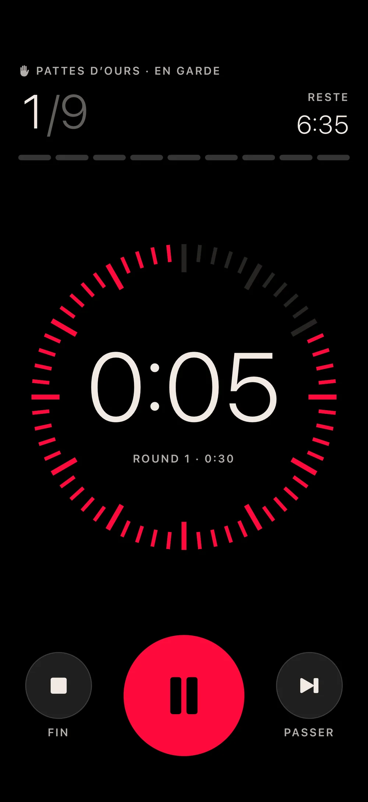
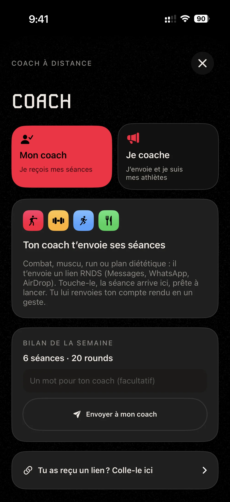
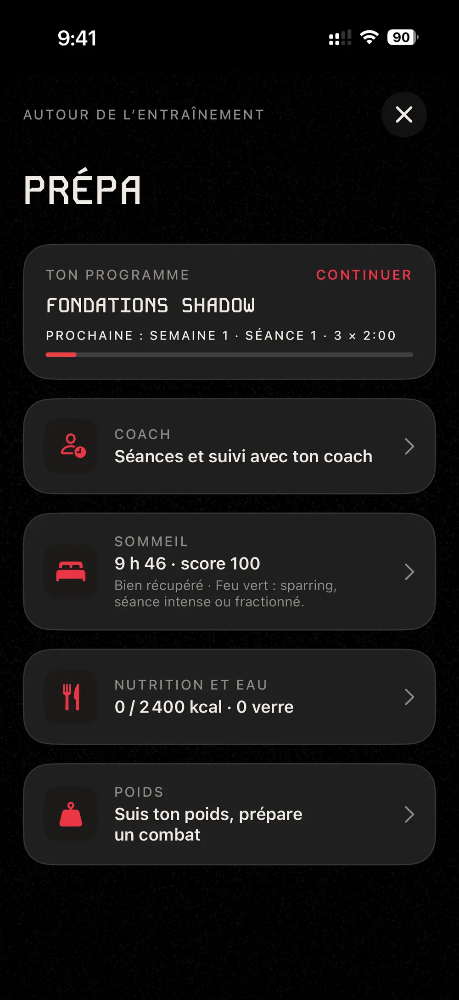
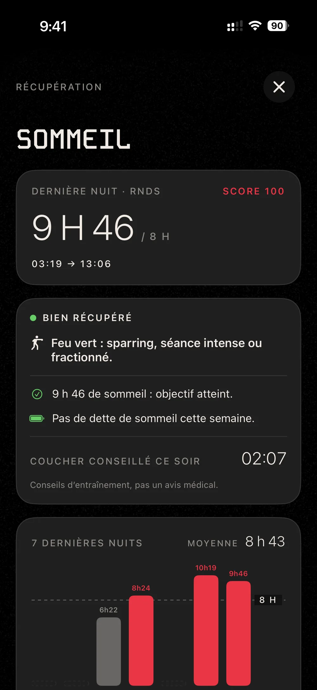
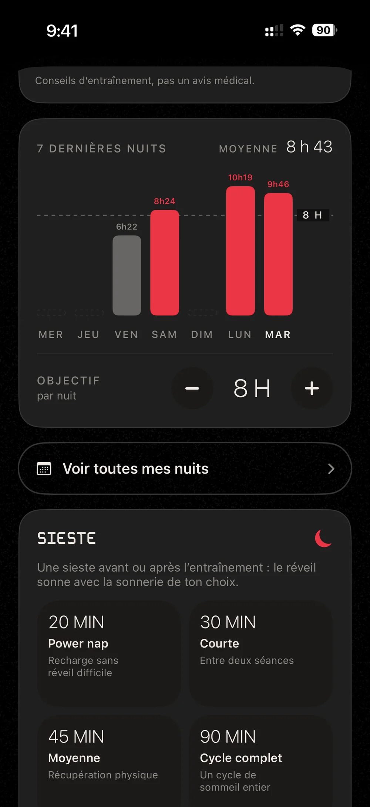
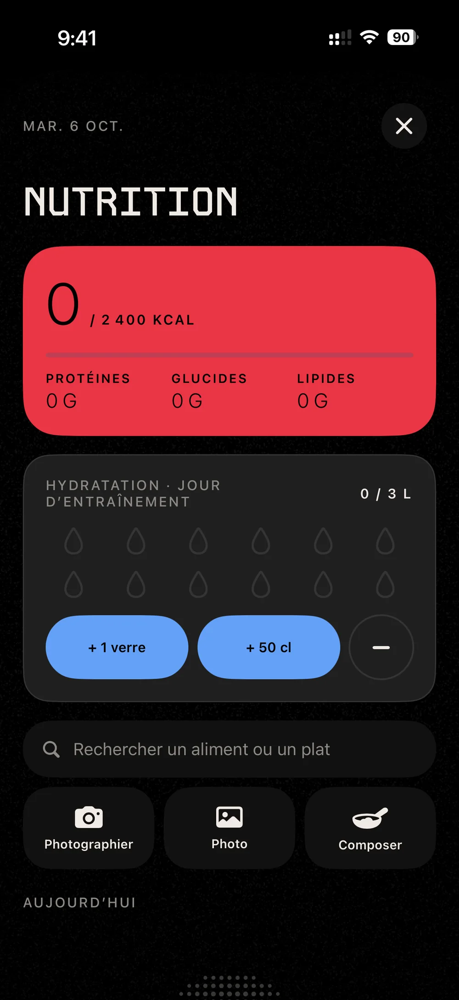
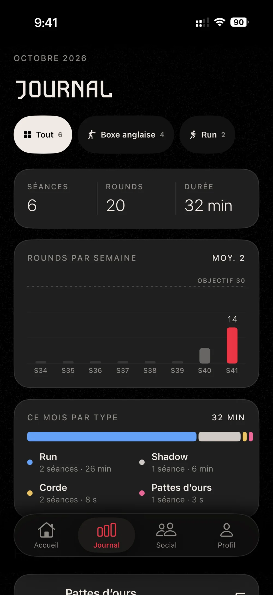
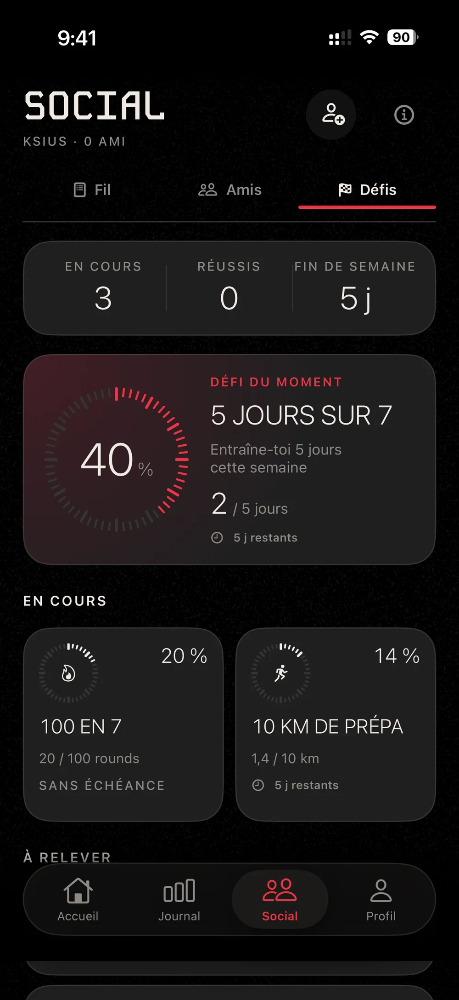
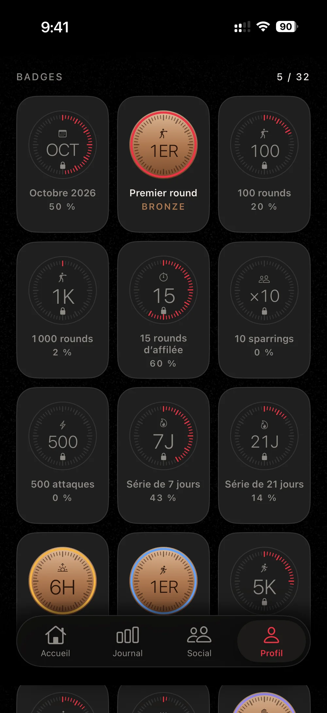

Loisir01
Fondations shadow
Garde, déplacements, jab, direct et esquives, en shadow, avant de passer au sac.

Un grand chiffre qui se lit depuis le sac, et des bips qui passent par-dessus ta musique.
12 × 3min
Pro
3 × 2min
Amateur
6 × 3min
Séance sac
1–15rounds
Au choix
Le timer sonne au début et à la fin de chaque round, et te prévient dix secondes avant la fin.
Pendant le round, une voix annonce les enchaînements et l’écran affiche la défense à travailler.
Apple Music ou ton podcast ne s’arrêtent pas. Le volume peut baisser le temps d’un bip.
Le round reste affiché en Activité en direct et dans la Dynamic Island.
Chaque programme dure de trois à six semaines, avec une consigne pour chaque séance. Une séance compte comme faite dès que tu as bouclé les trois quarts de tes rounds.
Garde, déplacements, jab, direct et esquives, en shadow, avant de passer au sac.
De 5 à 8 rounds de 3 min au sac, avec du travail au corps et des fins de round à fond.
Le mode rythmé à tempo rapide, avec des rounds et des repos courts.
Shadow, sac et mode rythmé en alternance, jusqu’à 12 rounds de 3 min.
Coach à distance
Ton coach t’envoie ses séances par lien : combat, muscu, run ou plan diététique. Tu touches le lien, la séance arrive dans RNDS.

Course à pied
Le GPS mesure la distance, l’allure et le tracé. L’app propose aussi des fractionnés, des séances sur piste et des sorties en zone cardio.
6 × 3 min au seuil, 1 min de récup, comme un combat.
Fractionné10 × 30 s à fond, 30 s de récup.
FractionnéUn tour de piste à chaque fois, 1 min 30 de récup. L’app note ton temps et ton allure sur chaque 400.
Piste1, 2, 3, 2 puis 1 min au seuil, 1 min de récup.
Fractionné3 × 8 min en zone 4, 2 min de récup.
Zone 440 min faciles : la base du cardio.
Zone 2À chaque kilomètre, un bip, puis la voix annonce la distance et le temps.
Autour de l’entraînement
Sommeil, repas, eau et poids, au même endroit que tes séances.




Pour le poids, choisis ta catégorie (16, de paille à lourd-léger) et la date de ta pesée, puis suis ton poids jusqu’au combat.
Chaque séance est enregistrée et rangée par semaine et par type. Ajoute tes partenaires de salle et lancez-vous des défis.



La montre suit la séance lancée sur l’iPhone et mesure ton cardio et tes calories.1
Séances, nuits, repas, eau et poids s’enregistrent dans Santé, si tu l’autorises.
Une ceinture Bluetooth envoie ta fréquence cardiaque directement à l’iPhone.
Le run et le sommeil s’affichent aussi sur l’écran verrouillé et dans la Dynamic Island.
Lance une séance ou un run à la voix.
Une commande pour lancer une séance sans ouvrir l’app.
Vie privée
Seul ce qui sert à la partie Social passe en ligne, et c’est toi qui choisis : une séance masquée ne quitte pas ton téléphone. Il n’y a ni publicité ni traceur publicitaire, dans l’app comme sur ce site.
30 j
de séances visibles en ligne, au maximum
24 h
pour traiter un signalement
Un mot de Marc
Je boxe à Lyon, et j’ai d’abord fait RNDS pour mes propres séances.
Si quelque chose te gêne à l’entraînement, écris-moi. Je lis tous les messages.
MarcLyon, octobre 2026
Carnet de bord
Version 1.0 en préparation
RNDS sort bientôt sur iPhone et Apple Watch. Envoie-nous un message et on te prévient le jour de la sortie.
ou écris directement à contact@rnds.app
Oui, en 30 secondes : ton e-mail (tu reçois un code à 6 chiffres, pas de mot de passe) ou « Continuer avec Apple ». C’est ce qui te permet de retrouver ton compte si tu changes d’iPhone.
Oui, tout fonctionne avec l’iPhone seul. Pour voir ton cardio pendant la séance, il te faut une Apple Watch ou une ceinture cardio Bluetooth.
Oui. Les bips et la voix continuent quand l’écran est verrouillé, et le round reste affiché en Activité en direct.
Ton journal reste sur ton iPhone et dans Santé. Seul ce qui sert à la partie Social est en ligne. Tout est détaillé dans la politique de confidentialité.
Dans l’app : Réglages › Données › Supprimer mon compte. Tes données en ligne sont effacées avec lui.